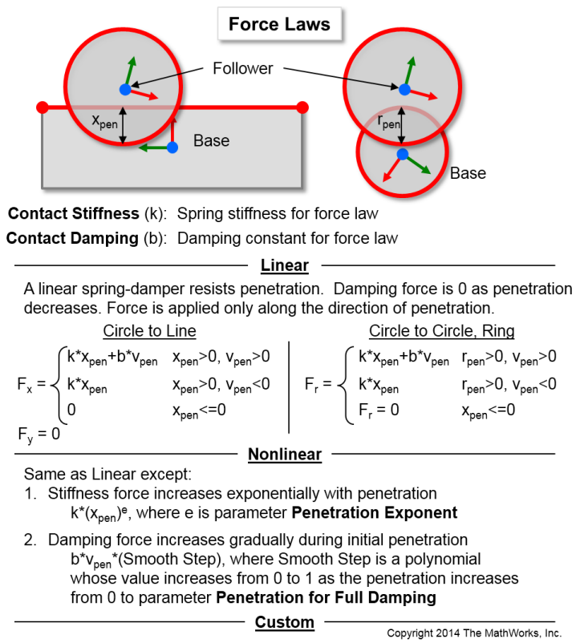

<!DOCTYPE html  PUBLIC "-//W3C//DTD HTML 4.01 Transitional//EN">
<!--Copyright 2014 The MathWorks, Inc.-->
<body bgColor="FFFFFF"><html>
<title>Force Laws</title>

<span style="font-family:Arial">
<span style="font-size:16pt">
<style type="text/css">
<!--
.tab { margin-left: 40px; }
-->
</style>
<tr><p class="tab">Add your own in Simulink: <a href="matlab:load_system('Contact_Forces_Lib');open_system('Contact_Forces_Lib/Force Law/Custom','force');">Edit Custom Force Law</a></p>        
<p class="tab">See also <a href="matlab:web('Friction_Laws.html');">Friction Law Documentation</a></p><br>    
</body></html>